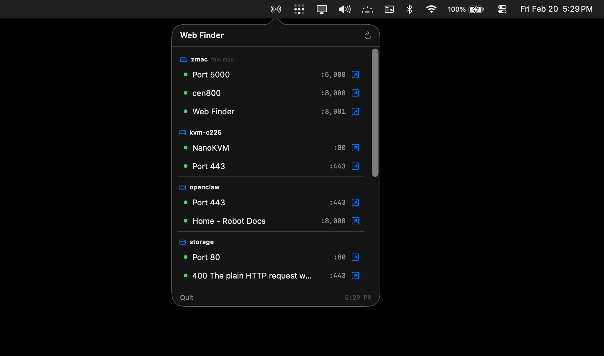

Web Finder scans your local machine and all Tailscale peers for running web services - and puts them one click away.

macOS menubar app - local machine and Tailscale peers at a glance
One command installs everything for your platform.
Menubar app + CLI — macOS 13+
curl -sSL https://raw.githubusercontent.com/zeulewan/web-finder/main/install.sh | bash
~/.web-finderWebFinder.appweb-finder to PATHCLI only — requires Node.js (auto-installed if missing)
curl -sSL https://raw.githubusercontent.com/zeulewan/web-finder/main/install.sh | bash
~/.web-finderweb-finder to PATHAutomatically detects web interfaces across common ports.
Scans 127.0.0.1 for open ports and fetches page titles to identify services.
Reads tailscale status and scans every online peer in parallel.
Synology DSM, TrueNAS, and other web UIs on ports 80, 443, 5000, 5001.
React, Next.js, Vite, and any server on ports 3000-3001, 4000-4001, 8000-8005.
Jupyter (8888), Gradio (7860), TensorBoard (6006), and Prometheus (9090).
JSON output mode lets AI agents and scripts query your network programmatically.
Works great standalone or piped into scripts and AI agents.